Associate Teaching Professor
Carnegie Mellon University
What if you had 3 months to start a company and launch a product?
I recently started a company, Khaki, aimed to fix your personal email. Although I've worked in startups before, this is my first time being a founder.
We applied to a well-known startup accelerator program, Techstars, and were accepted to the Columbus program as part of the Fall 2025 batch. It is a three-month, in-person program where they give you a crash course on building a company, provide you with funding and office space, and surround you with other founders and mentors. Perhaps the most important thing they provide: a forcing function to launch and iterate quickly. It is no longer a hobby project we are doing on the side.
Our team consists of folks I've worked with before. The CEO (and my cousin), Drew, from the startup I was at briefly. A former student, Gregory, who is our lead developer and just dropped out of his PhD at Michigan to do Techstars. And another former student, Ben, is with us part-time and was our lead developer at the previous startup.
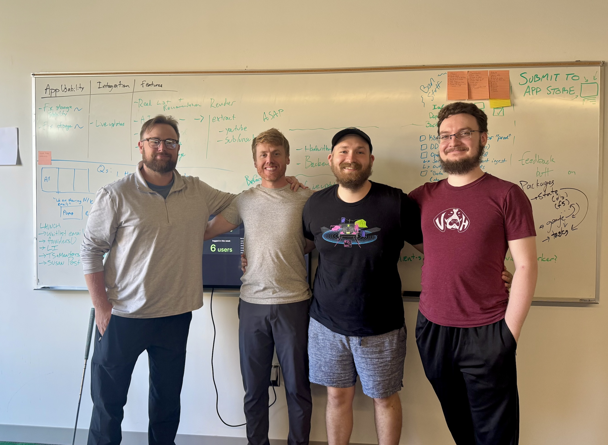We've been in the office iterating on our product and marketing strategy most days from 9am until 11pm, and we love it. It is fun! Although this work schedule isn't sustainable, it is extremely helpful while we get our product live and search for product market fit. It reminds me of my 5 internships.
I've been keeping a diary of our experience so far. Day in the life of Techstars. This is the first month:
We rented a house for the team to live in since 3 of the 4 team members are from out of state. It is in a very lively part of town...
The team went to Microcenter (a very nice tech store) to get an elaborate wifi and security system for the house.
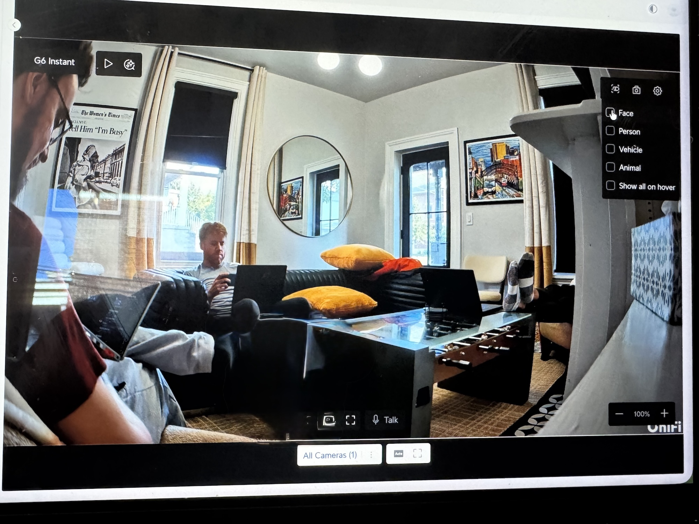On the official first day, we had to go get Ohio State University IDs and parking passes since the Techstars office building is on campus. The ID made me feel like I was betraying Carnegie Mellon. Go Tartans!
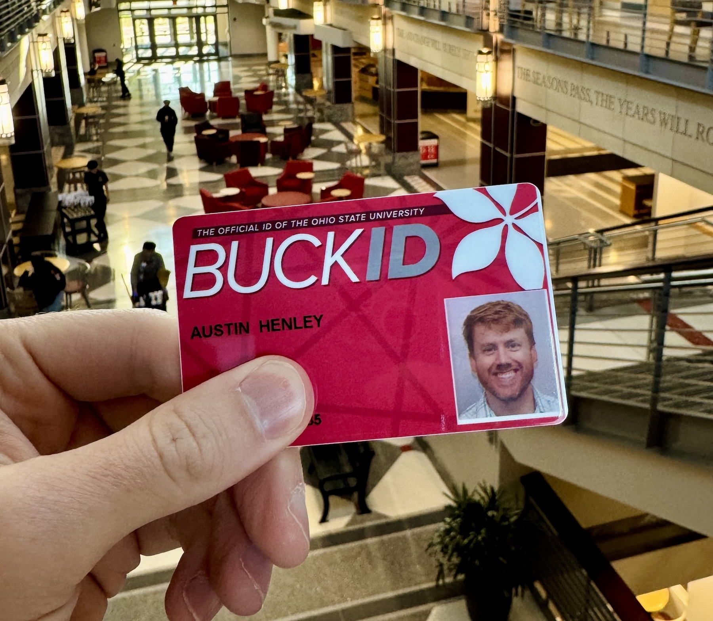Then we made another visit to Microcenter to get monitors and keyboards for our new office.
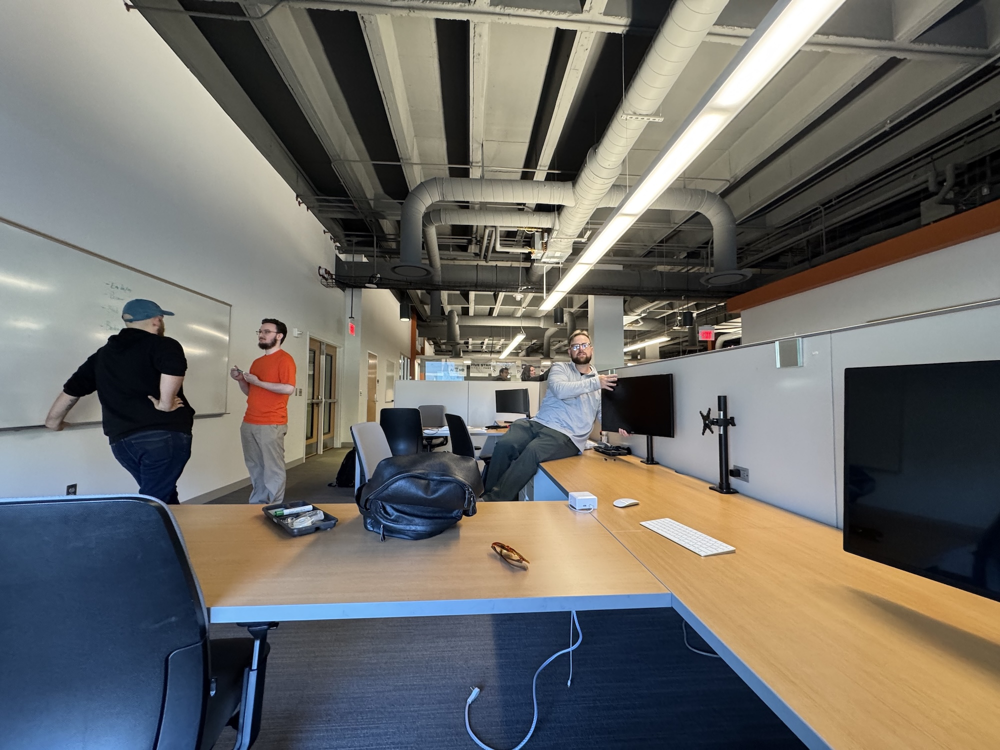This side of OSU's campus is nice and rather quiet. It is more like corporate office buildings than a college.
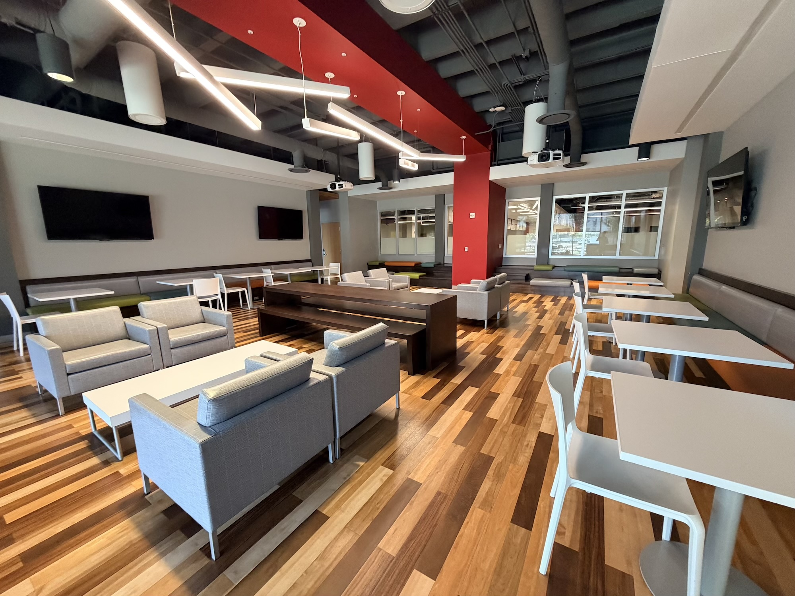The Techstars program includes optional daily workshops on various topics. The first day was a kickoff event followed by a KPI workshop.
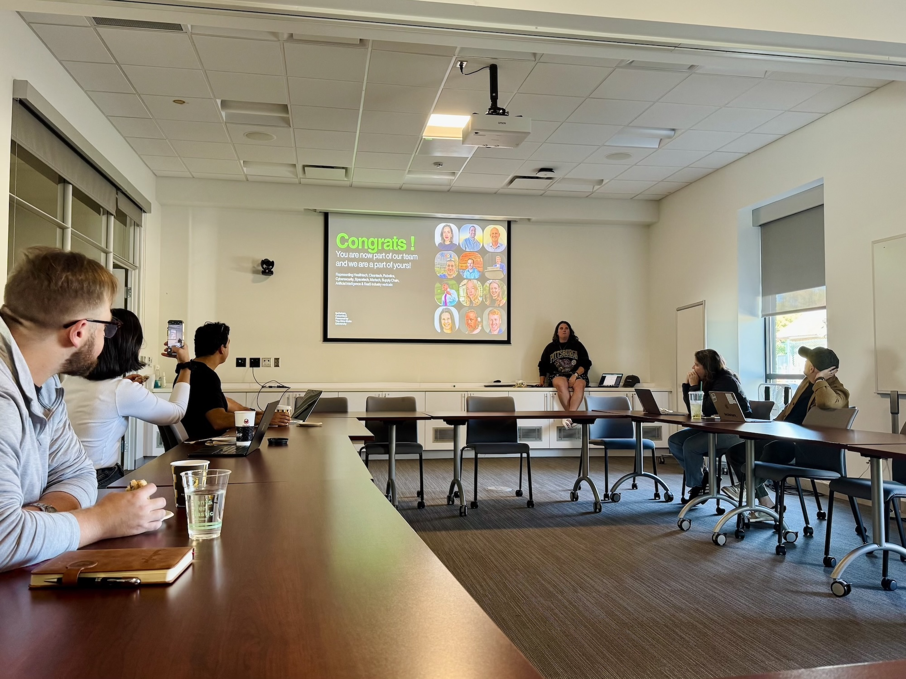Then our managing director hosted a dinner at his house (but not before another run to Microcenter was needed). He told us his startup(s) story and then had Techstar alumni do a Q&A session. The key takeaway is that startups are hard.
We made it our mission to be the first in the office every morning and the last to leave. Most startups fail but ours won't fail for a lack of brute effort!
Our product's infrastructure was coming together nicely so I kicked the day off by experimenting with the AI features we had been discussing. We try out every potential feature by vibe coding it as a component outside of our main app in a standalone playground. We iterate on it, then integrate it into our app.
Then I sketched out a roadmap for the next three months broken up into six sprints.
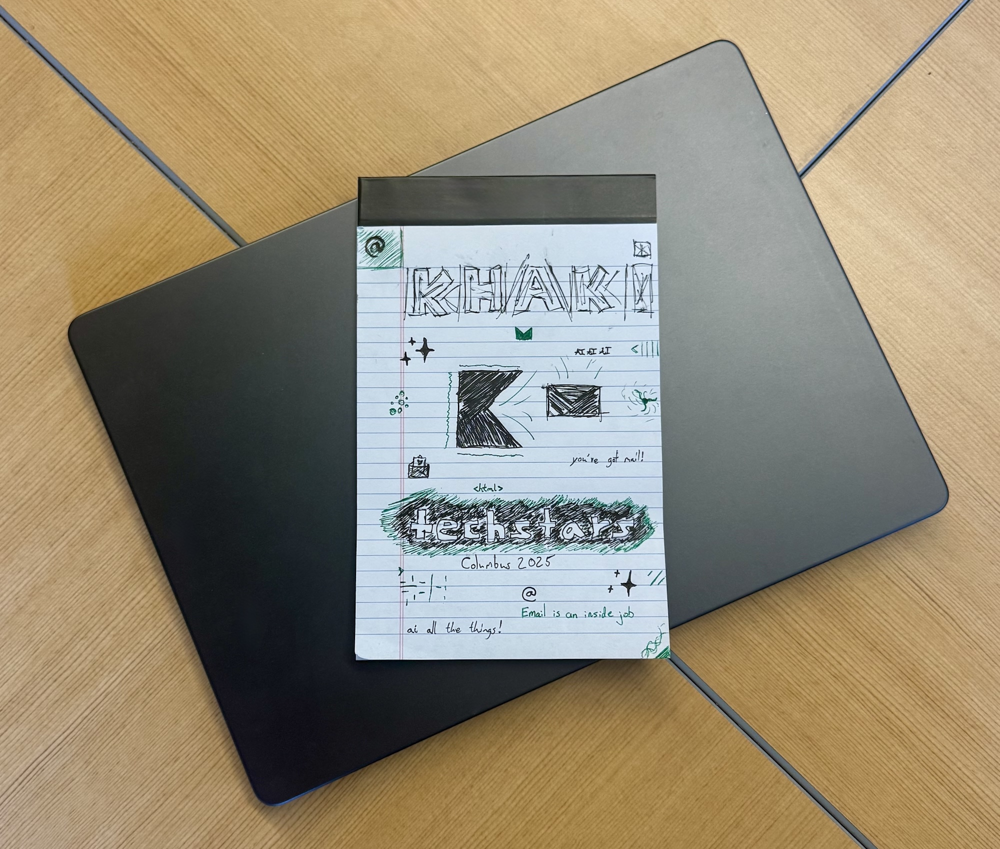I spent the afternoon applying for all the free credits for being in the Techstars program. $25,000 from Google Cloud. $5,000 from OpenAI. $100,000 from Digital Ocean. $25,000 from AWS. $5,000 from Anthropic. $25,000 from Microsoft. A few others I can't remember. It took >3 hours to do but surely $250,000+ in credits is worth it. The pain came from many of the forms being broken, unclear instructions, and rejections without rationale followed by tracking down a human on the other side to make sense of it. Digital Ocean's experience was absolutely beautiful. They put love into it. Everyone else... ugh.
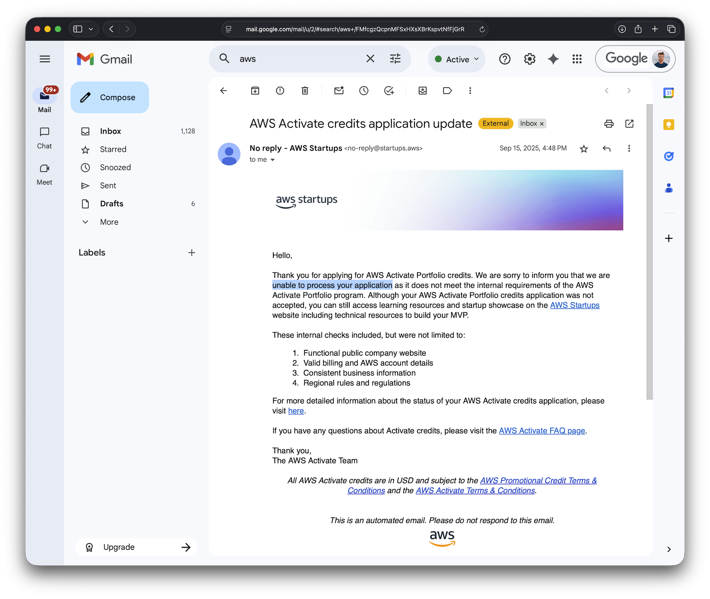That night we had a companies mixer event where the public was invited to meet the companies in our Techstars cohort and listen to our 60-second pitches. The audience was an interesting mix of local investors, founders, executives, and Ohio State University administrators and students.
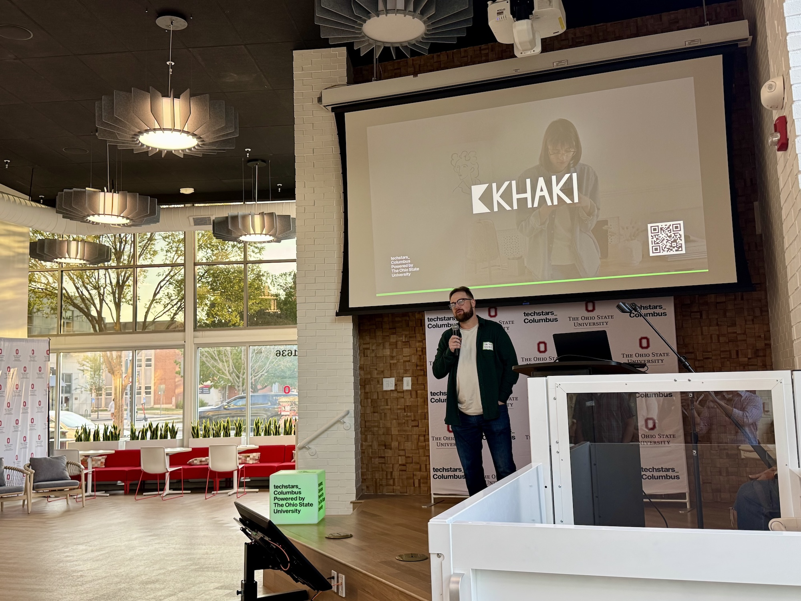I talked to the founder of FibrX, Kamel, about his story. He went from playing D1 college football to being a serial entrepeneur, building companies that sell to government and military agencies. Wow!
Day #3 for us included a customer discovery workshop, an investor pitch, and another productive coding session.
Then in the afternoon, I went to one of my favorite workshops of the program. It was by Superfan's cofounder, Will Mat, who did Techstars previously. He shared his experience rapidly shipping 10 micro-features in 10 days. His goal was to get away from working on complex features that may or may not have any value to users, so instead, only work on user-facing tasks that can be completed within a few hours and measure which move the needle.
They found out unexpected insights. For example, they often didn't have the necessary telemetry and infrastructure to measure user behavior. Some of their minor UI changes boosted engagement by wild numbers, like a 700% increase in a specific feature usage! Others that they had high confidence about had neglible impact or even unintended consequences. But it also was just a nice change of pace from the typical sprint process. They did this "10 features in 10 days" push twice and wrote up a report that they sent to their investors covering each feature and the results.
Back to work.
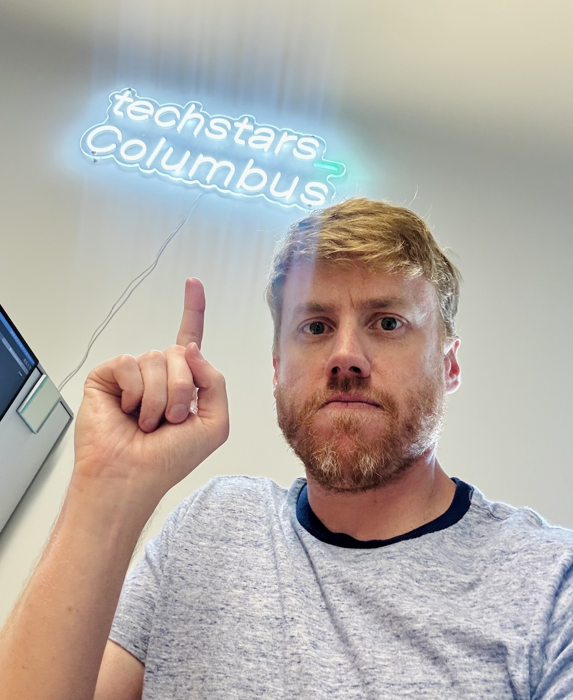On the 4th day, the team reviewed and iterated on the roadmap I sketched out. The questions we kept asking: When do we have an MVP? What is the M and the V in MVP for us exactly? When can we start onboarding users? When can we launch? What does a launch look like?
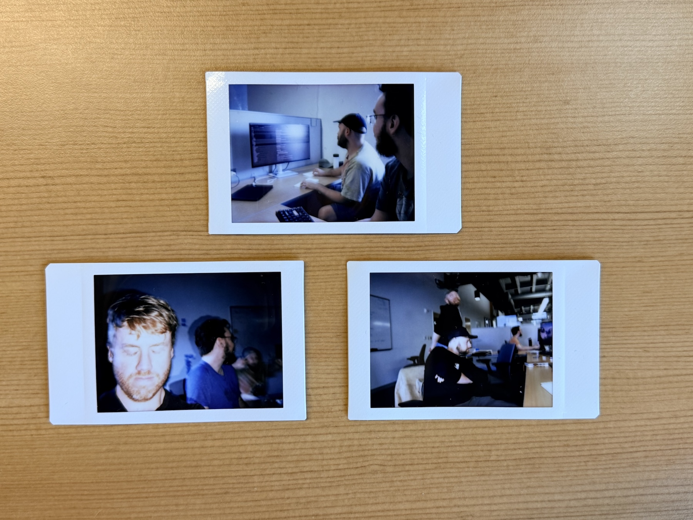The afternoon was "peer madness". We do 30-minute chats with every other team in our cohort (a total of 8 companies). This was cool because it was the first time we had a meaningful discussion with the folks we see every day and to hear about their companies.
Our cohort is an all-star crew. Some of them have millions in revenue already. I was expecting it to be all traditional software companies but I was very wrong.
Who are we? Khaki is a consumer email product that extracts the important info from your inbox and crafts custom pages just for you.
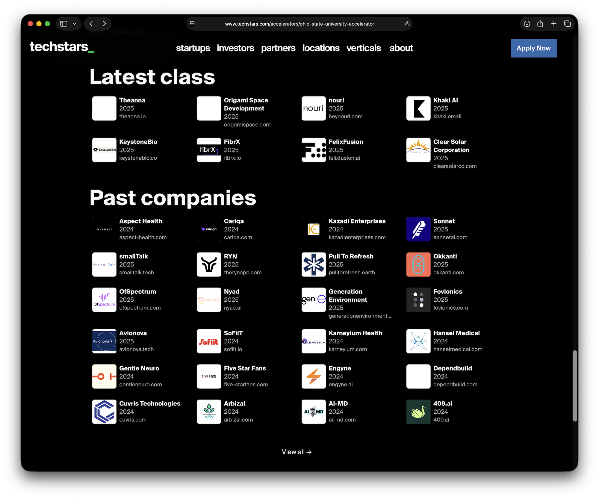We rewarded ourselves with a nice dinner that night.
Friday was all coding, no meetings. I was socialized out at this point. I added some quality of life features to our infrastructure (e.g., a flag to let us test it in our dev environment without going through the authentication flow) and integrated my AI experiments into our backend.
Then I drove back to Pittsburgh for 36 hours.
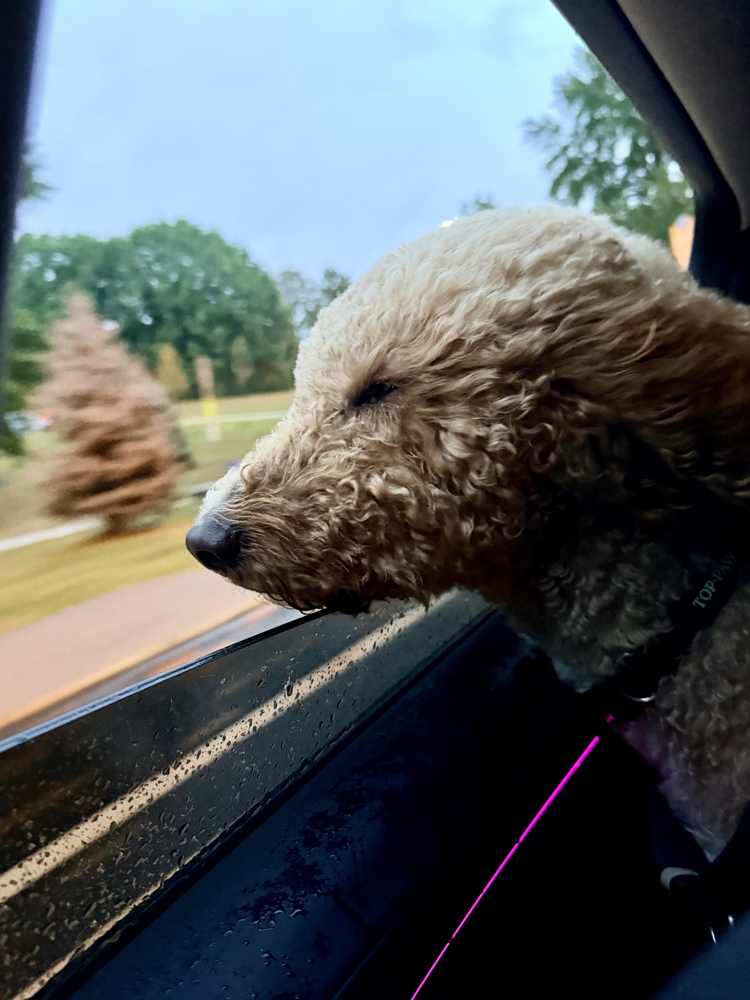I came back early Sunday and we took a break to go to a botanical garden.
The other companies went out of town for conferences so the office was oddly quiet. The first week was constant activities in the office and this week was just us going heads down.
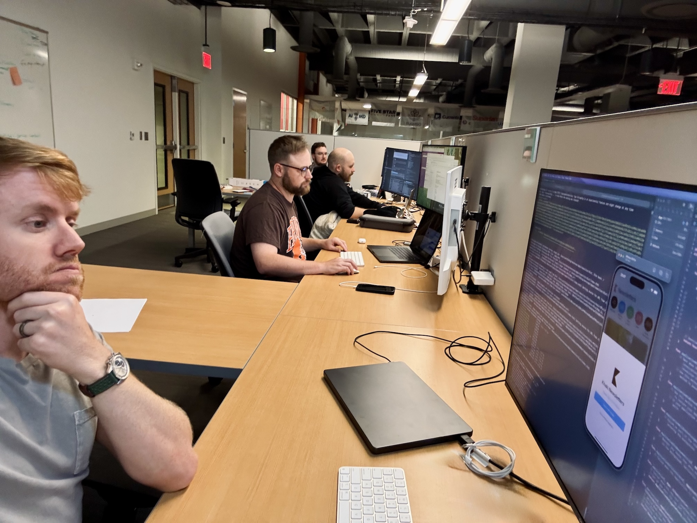We made another Microcenter run and Ben setup a dashboard powered by a Raspberry Pi. It will show how many active users we have and other telemetry once we launch.
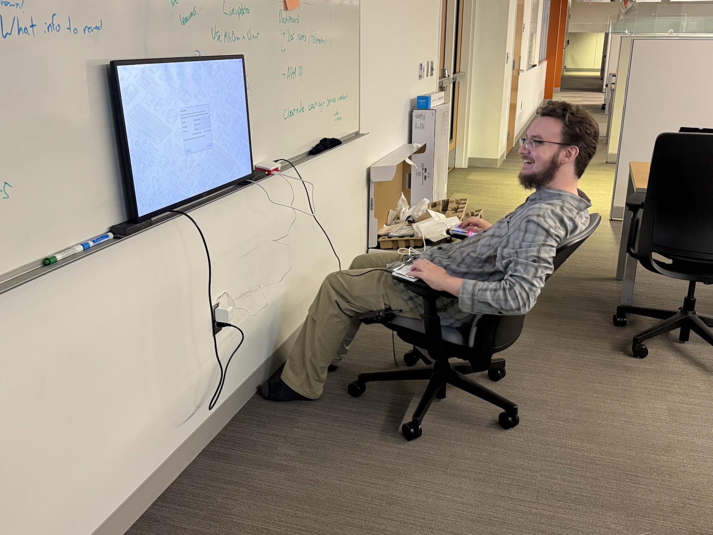Gregory went into a deep work mode to migrate us off React Native into a complex but beautiful app architecture that is essentially an operating system pretending to be a web app (and sometimes an iOS app). He also finally ended a series of bugs involving user authentication and re-opening the app. (OAuth is the bane of my existence.) Then we started on a task manager so that we can easily setup tasks with different triggers (e.g., when to check for new email).
Hard work also requires naps.
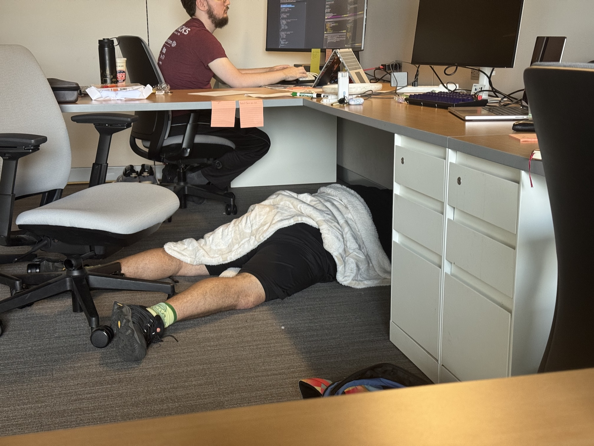Ben set up an elaborate CI/CD pipeline with multiple environments (dev, prod, and demo) for multiple targets (iOS and web). He also setup our cloud infrastructure, containerized everything, and made us cloud agnostic (since we have credits with all the big cloud providers).
How many keyboards do we need? Yes.
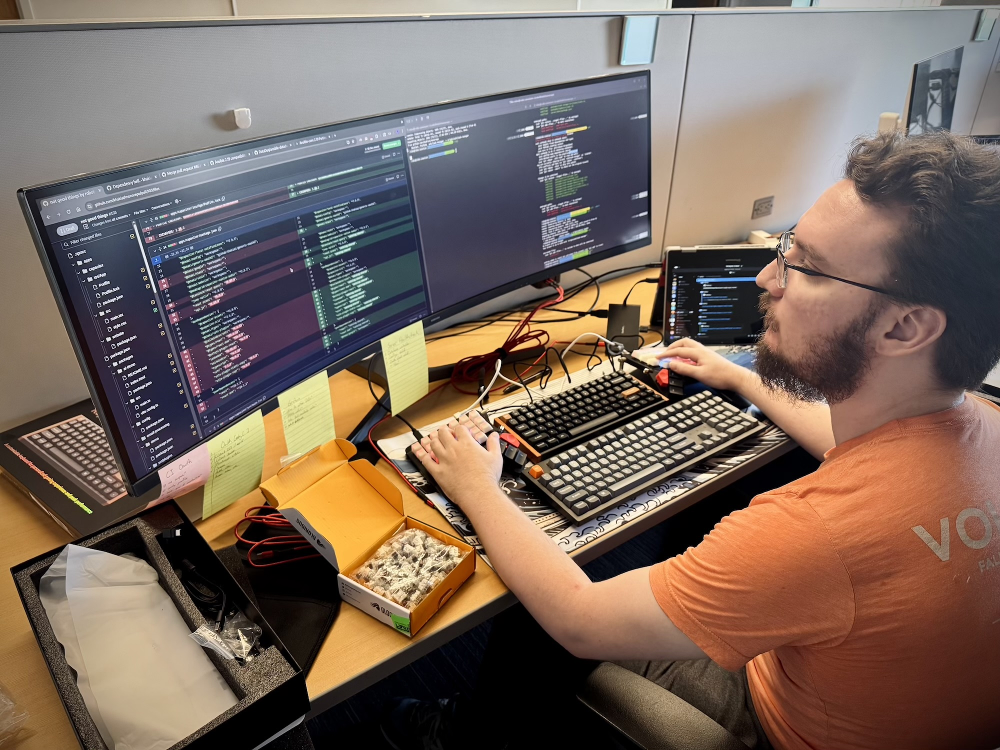I iterated on styling in the app, did more AI experimentation for trending topics and recommendations, and improved our email filtering.
We had a reunion with the cofounders, Kevin Mack and Ryan Moore, of the previous startup, BYBE. They're both off doing cool things now, like building industrial security hardware and rethinking software for grocery stores.
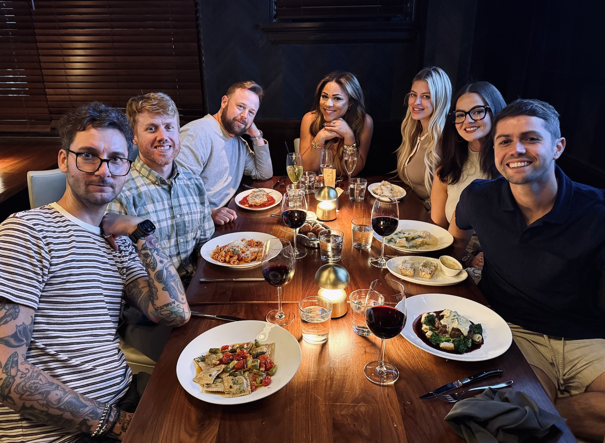At the end of the week, we started "mentor madness". This is 7 days of relentless 30-minute meetings with mentors with all sorts of backgrounds, mostly investors and former founders. We give them a quick pitch on our company and they give us feedback. Then we repeat this many times. At the end, we ask a few of them to continue mentoring us for the rest of the program.
All of this sitting had me feeling like a sloth so I started running in the mornings.
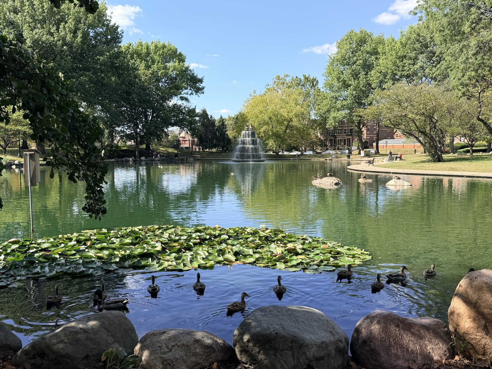I went back to Pittsburgh to teach for a few days. Again feeling like a sloth, I made sure to hit the climbing gym while I was there.
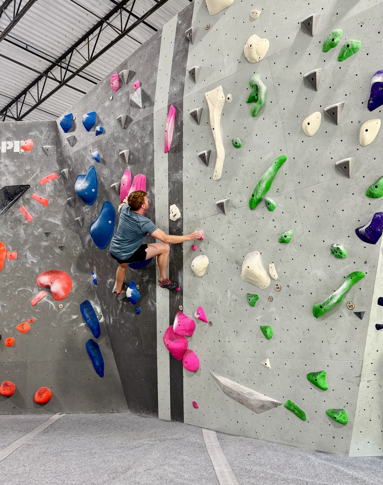The founder of ClearSolar, Michael, introduced me to the director of Carnegie Mellon's Swartz Center for Entreprenurship, which is doing all sorts of cool things. I found it funny that I needed to be hours away to connect with people at home.
I caught a cold and made the drive back to Columbus.
It was interesting chatting with the other founders about how they got into their fields. Space antennas? Critical infrastructure? Solar panels? It all makes email sound easy.
We had a few more days of all day meetings for mentor madness. It was exhausting but we got great feedback. It can be hard to make sense of 30+ opinions from strangers, especially when it contradicts. You should pivot to B2B! You should release yesterday! You should wait 6 more months until you release! You should hire another cofounder! You should go raise money! You should wait to raise money! We asked for a lot of feedback on our marketing strategy, and it quickly became clear that is where we need to invest our efforts the most.
The very last mentor I met with consulted for the HBO show, Silicon Valley, and even inspired the infamous Not Hotdog episode!
Despite all of the meetings, we still made considerable progress on the product. Gregory had been coding away the entire time. He built the frontend for the text-to-speech and share features, added animations and a loading page, redid the sender profile page, and integrated React Query to manage our state on the client.

I only had one coding session the entire week, but I created the API endpoint for our text-to-speech feature.
Quickly reacting to the feedback from mentors, Drew started engaging with newsletter writers to understand their painpoints and see if we could form a partnership with them. We also solicited product feedback from anyone who would listen to us.
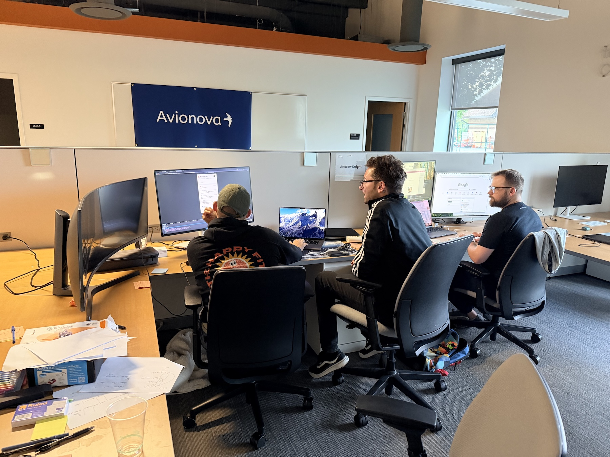I started running in the evenings when possible. There are some pretty neighborhoods in Columbus.
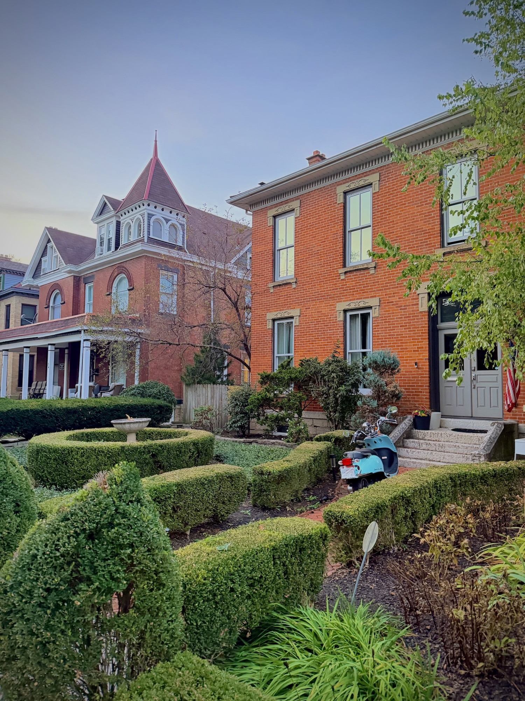On Saturday I took a break to hit up the zoo. It is the nicest I've ever been to!
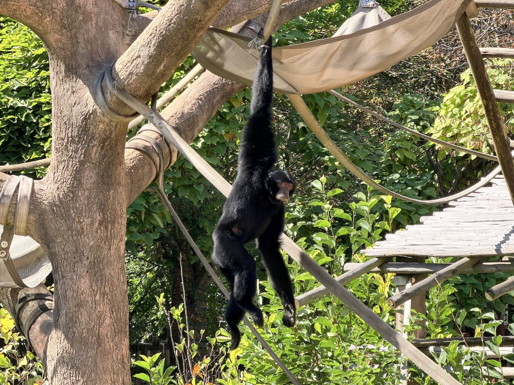Now that mentor madness was over, we had two missions: ship as many features as possible to prepare for launching and establish a marketing plan.
It is important to have motivating art around you to keep you focused.
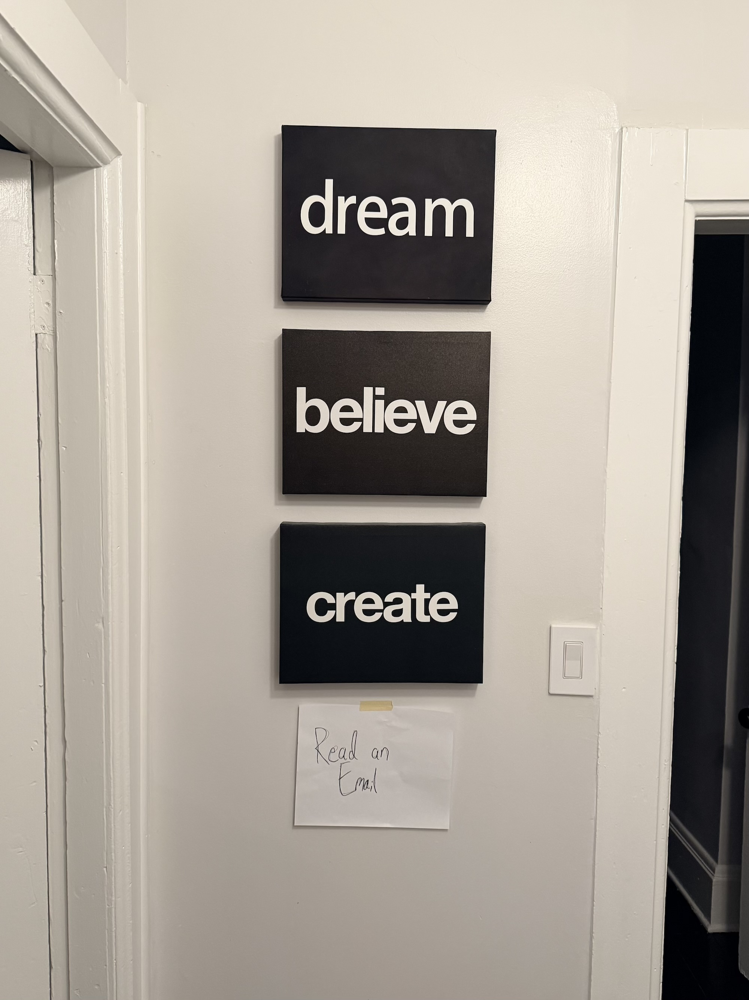We made a ton of progress on the app. We added multi-threading, an image proxy, greatly improved the sharing feature, added various styling and polish, fixed the reading progress bars, and manually added content to the sender profile pages of popular newsletter writers.
All of the polish made it suddenly feel like a real app. It was no longer embarrassing!
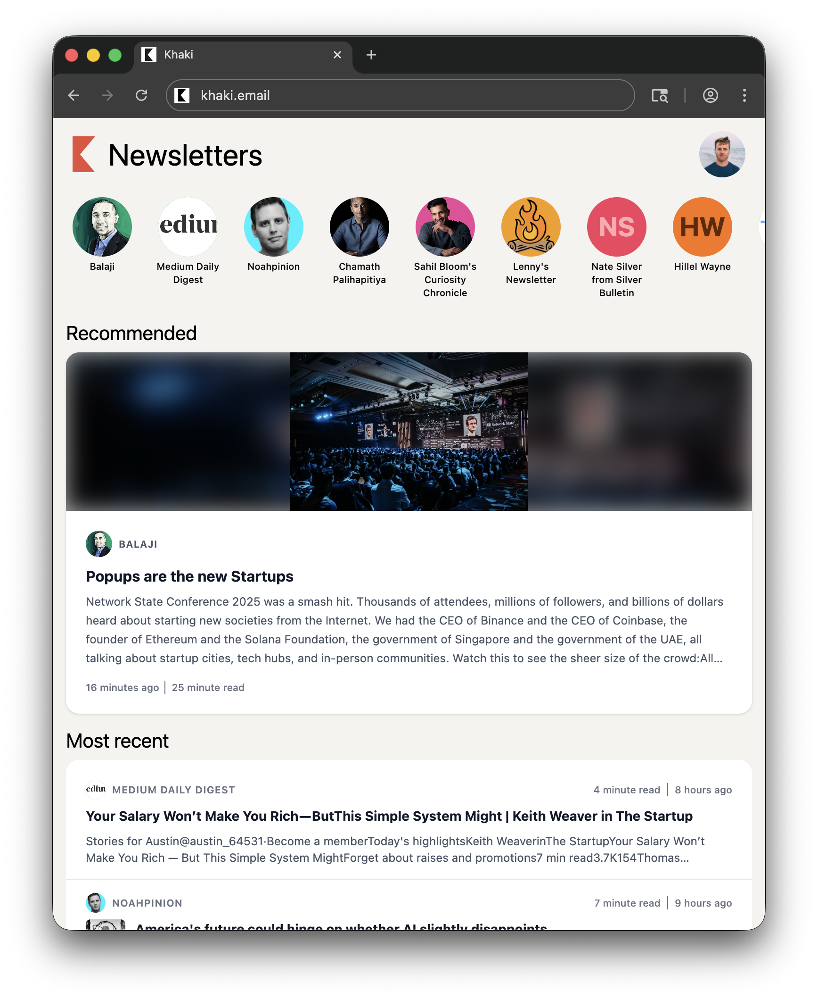Drew continued to develop the marketing plan, chatted with newsletter writers, and explored advertising options.
We took a break one night to eat some very delicious Indian food.
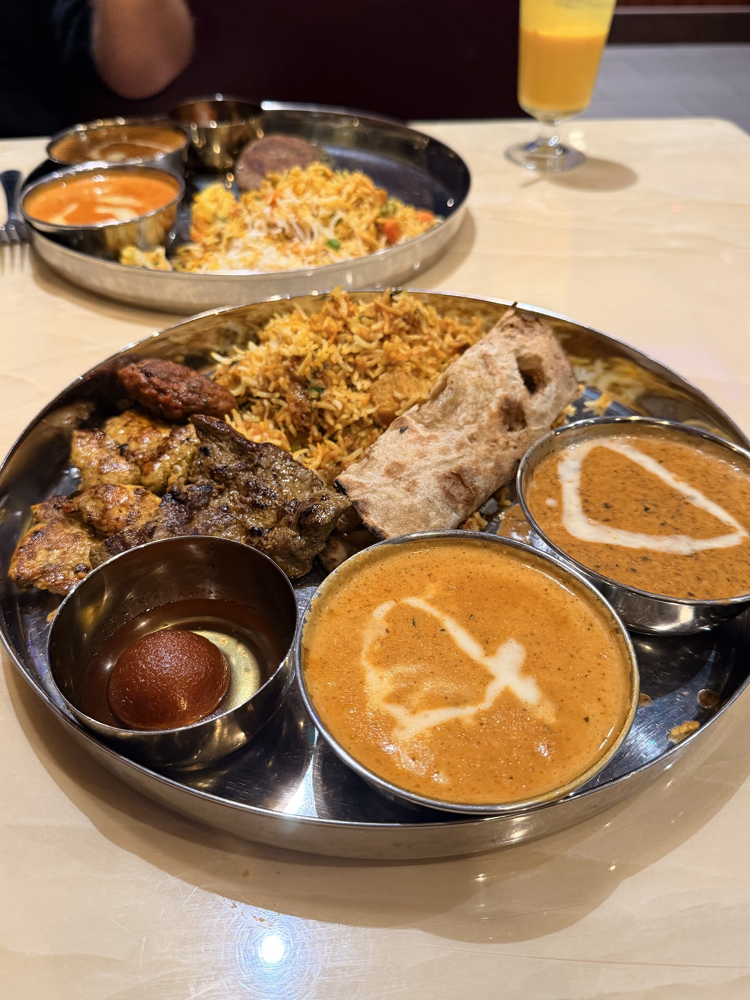During down time, I had a few fun discussions with the Hey Nouri cofounders in our cohort. They're also building a consumer app but with a very different goal: to help children with nutrition! They just made it into the iOS app store.
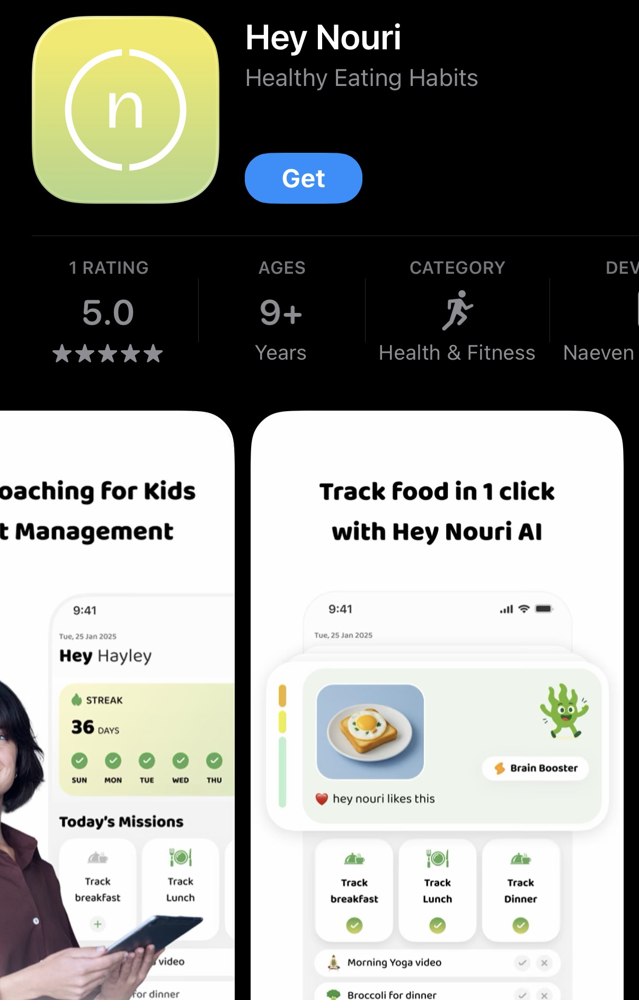Back to our team, I personally take responsibility for keeping up team morale...
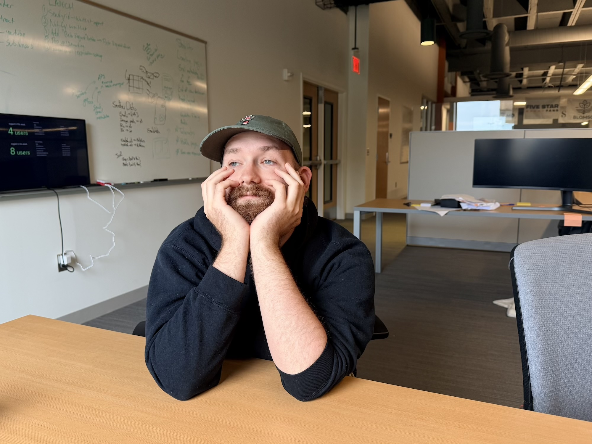Techstars hosted a storytelling workshop focused on pitches. I've participated in many storytelling workshops so my hopes weren't high, but this was fantastic. The emphasis on how to hook listeners during a pitch presentation along with concrete advice made it very useful.
The workshop was ran by a Techstars alum that created a product, Speeko, that listens to your presentation and gives specific feedback on how to improve. We each had to get up and give a 3-minute pitch, and then hear feedback from the app as well as the other founders. I had fun.
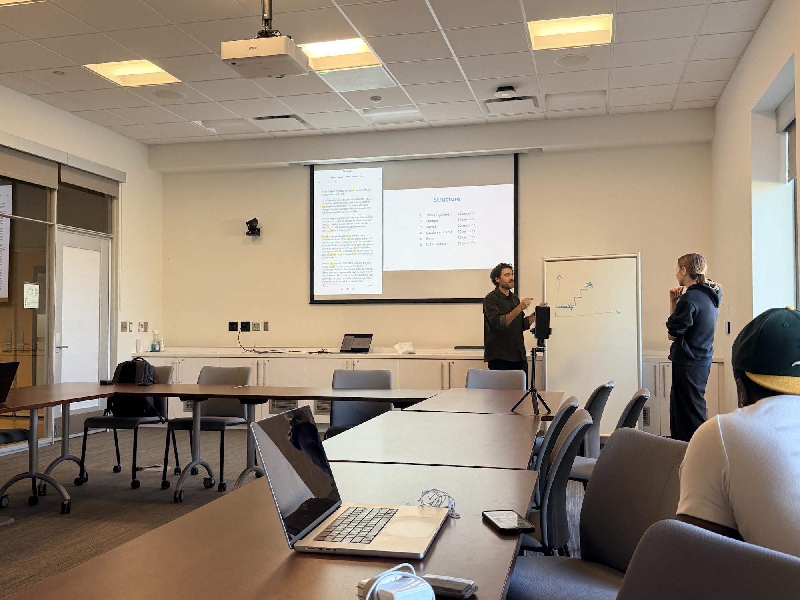We wrapped up the first month of Techstars with a retreat. Two nights in a really nice cabin in the woods with the other founders and Techstars staff.
When I first arrived, I joined in a conversation where Tim Grace, the managing director of Techstars Columbus, was lecturing everyone on Chicago-style pizza. This is a very serious topic.

We played games, had long chats, played pool, soaked in a hot tub, cooked, ate, and went on a nice hike in Hocking Hills State Park.

That is the end of the first month of our Techstars program. It has been action packed, we've learned a lot, and there is much, much more work for us to do.
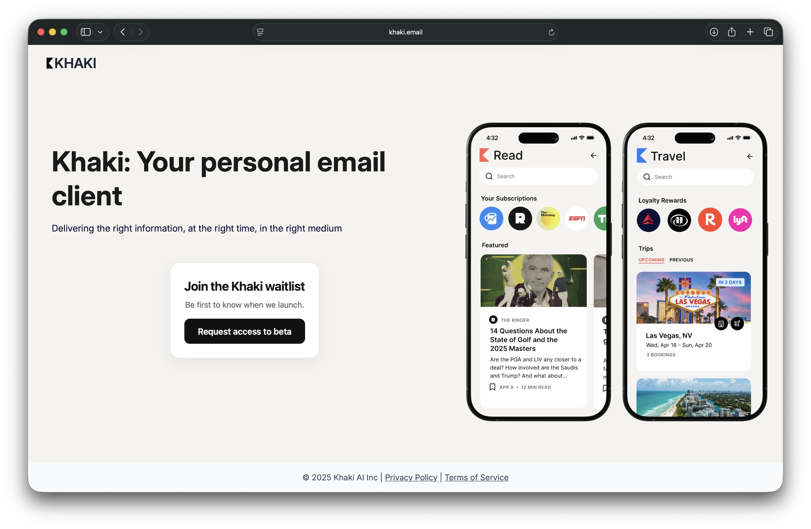Our product will be launching soon, so please sign up for our waitlist if you want a better solution to personal email: https://khaki.email